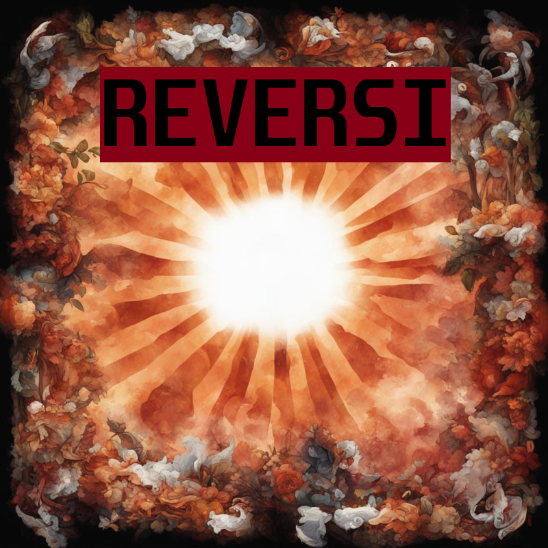

Reversi is a classic two-player board game that has been around for decades.

1. Game menu:
- Start button - opens a new window with game settings:
- Choose the number of rounds or a quick game (1 round)
- Game option selection: regular reversi, NxN reversi, anti-reversi, black hole reversi
- choosing the color of the chips that the user is playing for
- The "Start game" button
- Settings button - opens a new window with settings:
- selecting the player's name
- choosing the design of the board and chips
- The "Save" button saves the settings and goes to the previous menu
- Exit button - displays the dialog box "Do you want to exit the game?" with options for exiting the game or returning to the game. 2. Gameplay
- drawing the board and pieces on the screen, highlighting the figure (frames around the figure) after clicking on it, selecting available cells for making a move (implementing one of the rules of the game), placing chips on the cells available for the move
- changing the color of a number of chips after a successful move by the opponent (implementing one of the rules of the game)
- implementing the algorithm behavior of the opponent bot (computer)
- implementation of the algorithm for determining the end of the game
- request statistics and its visualization
- the ability to pause the game with the display of a dialog box:
- Resume game button
- Exit the game button - return to the main menu of the program
- Restart button - restart the game with the same parameters
- the visual part:
- Game time display
- displaying the score of the round (for example, the ratio of chips)
- Displaying the score of the game (if it is a multi-round game)
- Displaying the round counter (if it is a multi-round game)
- Displaying the player's name
- at the end of the game, the dialog box is displayed:
- name of the winner
- The score of the game if it is a multi-round game
- Exit or Restart buttons
Copyright (c) 2020 Sanya Workshop. All rights reserved.